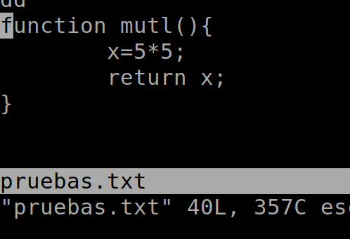
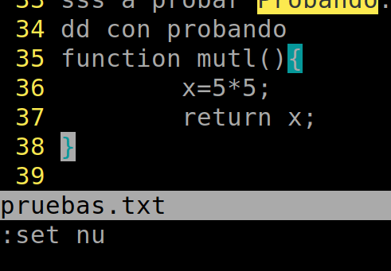

Breve guía sobre NEOVIM
Vamos a repasar tres modos básicos que tenemos con VIM. Modo inserción de datos, modo normal y visual (selección).
Por defecto estamos en modo normal.
y pulsando la tecla "i" entramos en modo inserción.

Con la tecla "ESC", saldremos del modo inserción y volveremos al modo de visualización.
Hay diversas maneras de moverse o acciones pero aquí vamos a revisar sólo algunas que nos parecen aconsejables para empezar a usar VIM, en nuestro caso a través de NEOVIM.

Para ir al inicio y final de una fila podemos hacer uso de la tecla "INICIO" o del número "0". PAra ir al final podemos haceer uso de la tecla "FIN" o de la tecla "$".
Con la tecla "*" encontramos la siguiente palabra que sea igual a la indicada por la posición del cursos.
Con la tecla "#", se buscará la anterior. El movimiento será el mismo pero hacia atrás.
Con la tecla "CTRL+INICIO" o "gg" se irá al inicio del fichero y con la tecla "CTRL+FIN" o "G" irá al final del fichero.
Para mostrar el número de filas podemos hacer uso de ":set nu". Para quitarlas, ":set nonu". Se puede configurar el fichero de configuración para cambiar el modo de funcionamiento por defecto.
Para ir a una fila concreta, se puede usar la tecla "G" precedida del número de fila. Ejemplo "2G" para ir a la 2da fila.
En texto donde se use paréntesis o llaves, con el símbolo % de porcentaje podemos ir a su pareja.

Si queremos hacer una búsqueda, podemos hacer uso de la tecla "/". Luego, con las teclasa "n" y "N" podemos mostrar los siguientes o anteriores resultados de la búsqueda.
Para añadir una fila nueva tenemos dos posibilidades. Pulsar la tecla "o" o "O", añade una fila nueva y entra en modo inserción. Otra opción es acceder al modo "inserción" y hacer uso de la tecla "INTRO" situándonos donde queramos añadir una fila nueva.
Si queremos cambiar un caracter sin entrar a modo inserción, podemos hacer uso de la tecla "r". Una vez activada con seleccionar la tecla que queramos, sustituirá la que esté marcada por el cursor.
Si queremos borrar podemos hacer uso de la letra "d". También podríamos entrar a modo edición y borrarcon la tecla "SUPR" o "RETROCESO". Si queremos borrar una palabra podemos hacer uso de la combinación "dw". Realmente no la borra sino que la corta por ello, con la letra "p" podemos pegar donde queramos dicho contenido.
Si queremos podemos borrar una fila entera haciendo uso de la letra "dd". Como antes, realmente se está cortando dicho contenido por lo que con la tecla "p" podemos pegar lo copiado donde queramos.
Con la tecla "." (punto), podemos repetir la última acción. Por eejmplo, si cortamos un contenido podemos pegarlo en varias ocasiones pero recuerda, es repetir la última acción, sea la que sea.
Si deseamos seleccionar un texto entraremos en modo visual pulsando la tecla "v", momento en el cual ya comenzará la selección. Una vez seleccionamdo lo deseado, con la tecla d podemos borrar dicho contenido. Si quisieramos podríamos pegar dicho contenido en otro sitio.
Co la letra "yy" copiaremos la línea en la que nos encontremos. Con la letra "p" podemos pegar dicho contenido.
Con la letra "S" borraremos la línea en la que nos encontremos. En nuestro caso muy parecido a "dd".
Con ":w" podemos grabar los cambios.
Con ":q" podemos salir
Con "q!" saldremos sin grabar cambios.
Con ":u" desharemos cambiamos y con "CTRL+R" reharemos cambios.
Para acceder a la ayuda podemos hacer uso de ":help".